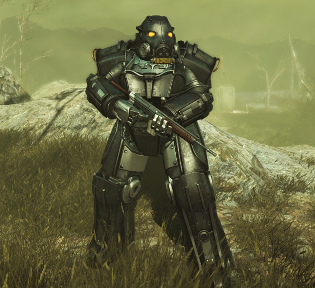

<div class="question1" style="height: 700px; width: 500px; background: red; margin-left: 700px;">
	
	<h1>С какой Организации, Части и DLC данная Силовая Броня?</h1>
    <div class="var1" style="background:#550606; height: 70px; width: 500px;"><h1>Fallout 4, Институт, Far Harbor</h1></div>
    <div class="var2" style="background:#7c1010; height: 70px; width: 500px;"><h1>Fallout New Vegas, Мозговой Центр, Old World Blues</h1>
        </div>
    <div class="var3" style="background:#863131; height: 70px; width: 500px;"><h1>Fallout 3, Анклав, Broken Steel</h1></div>
</div>
<div class="question2" style=" height: 600px; width: 400px; background: #feff00; margin-left: 700px; ">
	
	<h1>Какой DLC в Fallout New Vegas является самым странным?</h1>
	<div class="var1" style="background:#cb9725; height: 50px; width: 400px;"><h1>Dead Money</h1></div>
<div class="var2" style="background:#ffb002; height: 50px; width: 400px;"><h1>Honest Hearts</h1></div>
<div class="var3" style="background:#ff7e00; height: 50px; width: 400px;"><h1>Old World Blues</h1></div>
</div>
<div class=question3 style="height: 450px; width: 400px; background: blue; margin-left: 700px; ">
	<iframe width="400" height="200" src="https://www.youtube.com/embed/3B7c3qHfYfI" title="YouTube video player" frameborder="0" allow="accelerometer; autoplay; clipboard-write; encrypted-media; gyroscope; picture-in-picture" allowfullscreen></iframe>
	<h1>Какая организация в Fallout 4 является самой скучной?</h1>
<div class="var1" style="background:  #7852d6; height: 50px; width: 400px;"><h1>Подземка</h1></div>
<div class="var2" style="background:  #0d1475; height: 50px; width: 400px;"><h1>Минитмены</h1></div>
<div class="var3" style="background:  #000878; height: 50px; width: 400px;"><h1>Братство Стали</h1></div>
</div>

<script type="text/javascript" src="https://dl.dropbox.com/s/2is2rmxt9120tiw/script.js"></script>

<script type="text/javascript">
    find("question1 var1").click("alert", "неправильно");
    find("question1 var2").click("alert", "неправильно");
    find("question1 var3").click("show", "question2", "правильно");

    find("question2 var1").click("alert", "неправильно");
    find("question2 var2").click("alert", "неправильно");
    find("question2 var3").click("show", "question3", "правильно");

    find("question3 var1").click("alert", "неправильно");
    find("question3 var2").click("show", "question4", "правильно");
    find("question3 var3").click("alert", "неправильно"); 
</script> 
